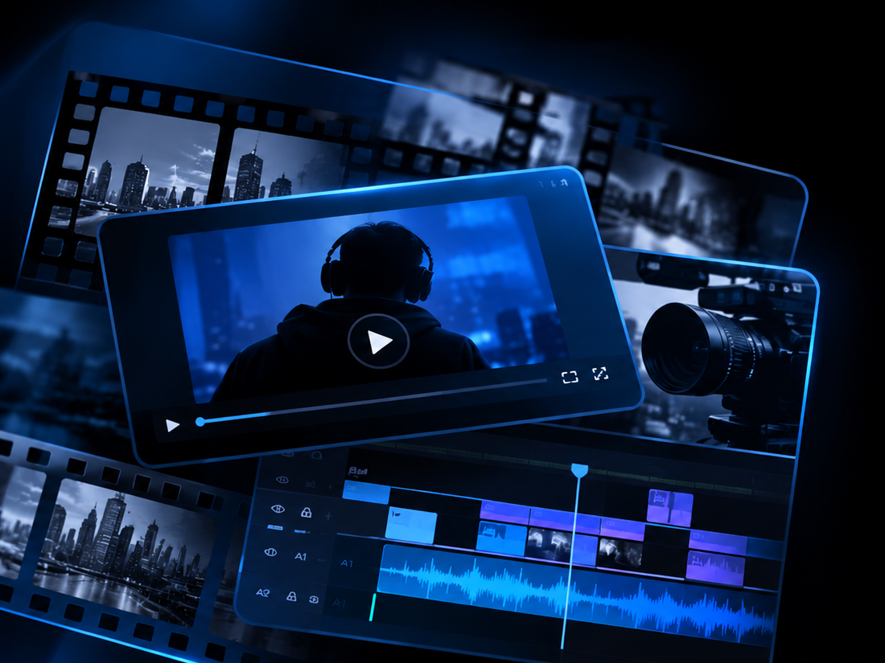

La Fouine
MONTEUR VIDÉO INDÉPENDANT
Des idées.
Du rythme.
Une histoire.
TTS accompagne les créateurs dans la mise en valeur de leurs contenus, du montage gaming au storytelling.

01 — 03
INDÉPENDANT · FRANCEGAMING / STORYTELLING / CONTENTSCROLL TO EXPLORE ↓
01 / L'APPROCHE

Le montage ne sert pas seulement à assembler des images.
Il donne du sens au contenu.
Je travaille le rythme, la narration et les détails visuels pour transformer des rushs en vidéos agréables à regarder et adaptées à leur public. Une approche simple : comprendre l'intention, trouver le bon tempo et soigner chaque séquence.
02 / SÉLECTION
Deux formats,
une même exigence.
Du contenu court pensé pour les plateformes sociales aux montages longs construits pour YouTube.
Format court
TikTok · Reels · Shorts · storytelling
01 / 08
Format long
YouTube · gaming · best-of · narration
01 / 02
NOTE
Certains visuels sont encore des aperçus graphiques temporaires. Les extraits présentés sont intégrés à titre de portfolio, sous réserve des droits de diffusion.
03 / DÉROULEMENT
Simple, clair,
du premier échange à la livraison.
On échange
Tu me présentes ton contenu, tes envies et tes objectifs. On prend le temps de comprendre le ton, le public et le résultat que tu souhaites obtenir.
On cadre le projet
Je regarde les rushs, le volume et les besoins techniques. On définit ensemble le format, les délais et le budget avant de démarrer, avec un devis clair.
Je monte
Je sélectionne les meilleurs moments, construis le rythme et travaille l’image comme le son. Tu reçois un premier rendu pour vérifier que la direction te convient.
On finalise
On ajuste les derniers détails selon les retours prévus, puis je prépare et te transmets les fichiers finaux, prêts à être publiés sur tes plateformes.
04 / RETOURS CLIENTS
Leurs mots,
pas les miens.
Les expériences et retours de créateurs avec qui j’ai eu le plaisir de travailler.
“AVIS & ÉCHANGES
Les premiers retours arrivent bientôt.
Cette rubrique accueillera des captures de conversations et des commentaires, partagés avec l’accord de leurs auteurs.
05 / PRESTATIONS
Trois façons de
raconter votre contenu.
Trois approches complémentaires selon ton contenu, tes objectifs et le format que tu souhaites publier.
01 — CLASSIQUE↗
Un montage propre,
fluide et efficace.
Pour les créateurs qui souhaitent transformer leurs rushs en une vidéo claire et cohérente : gaming, storytelling, documentaire, éducation et bien d'autres contenus.
- Dérushage et sélection des meilleurs moments
- Assemblage fluide, chronologie et rythme
- Gestion de plusieurs points de vue
- Ajustements audio et intégration d'une musique adaptée
- Effets simples et sous-titres ponctuels si nécessaire
Une base claire et efficace
02 — TRAVAILLÉE↗
Un montage créatif
et personnalisé.
Pour les projets qui demandent une mise en scène plus marquée, avec un montage créatif, personnalisé et un travail visuel et sonore plus poussé.
- Sélection et organisation des moments forts
- Rythme, réactions, humour et mise en récit
- Zooms, arrêts sur image et changements de vitesse
- Incrustations, overlays et textes animés
- Sound design et harmonisation de l'image
Une création plus poussée
03 — FORMATS COURTS↗
Des vidéos verticales
prêtes à publier.
Pour transformer tes rushs en contenus courts, rythmés et adaptés à TikTok, Instagram Reels et YouTube Shorts.
- Gaming et streaming : recherche des meilleurs moments
- Facecam et informatif : montage et sous-titres
- Storytelling : recherche visuelle et mise en récit
- Sélection et organisation des séquences : dérushage, recherche de moments forts et découpage
- Travail sur le rythme et la mise en valeur du contenu : coupes dynamiques, illustrations et habillage visuel simple
- Format vertical 9:16, de 30 secondes à 5 minutes
Du contenu pensé pour les réseaux
Chaque projet est différent. Échangeons sur ton contenu, tes idées et tes attentes pour construire une prestation adaptée à tes besoins.
06 / CONTACT
Tu as un projet
en tête ?
Parle-moi de ton contenu, de tes envies et de tes objectifs. Je te répondrai pour qu'on puisse en discuter.
ENVOYER UN MESSAGE